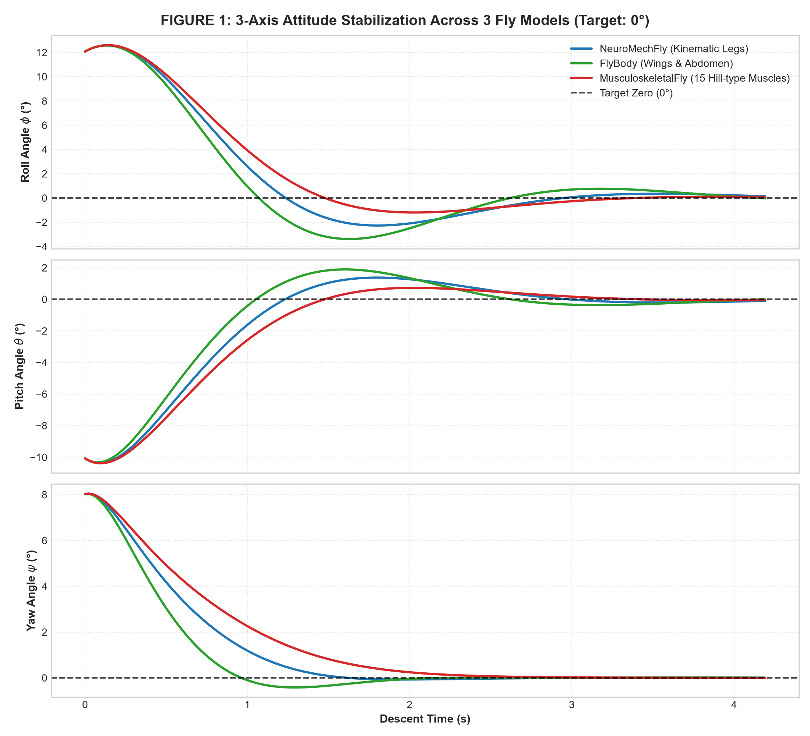
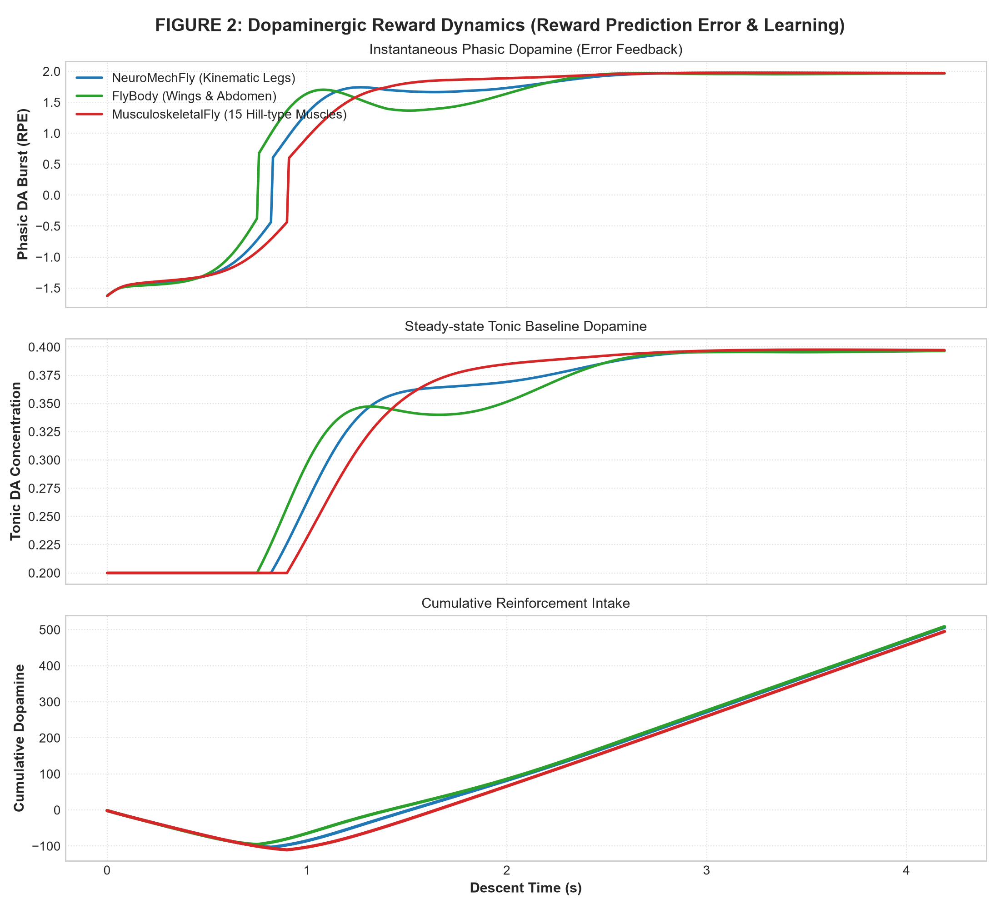
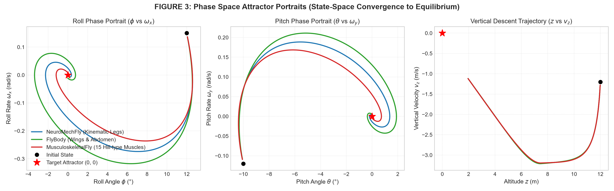
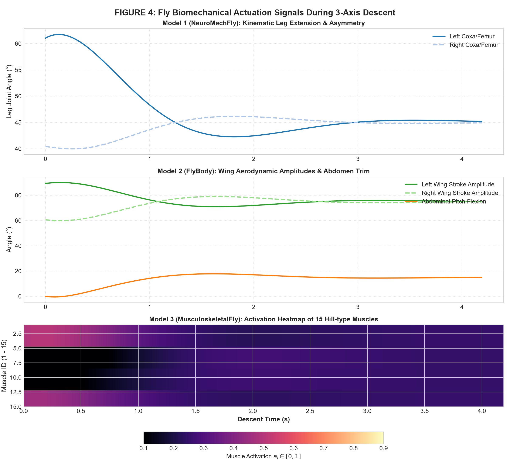
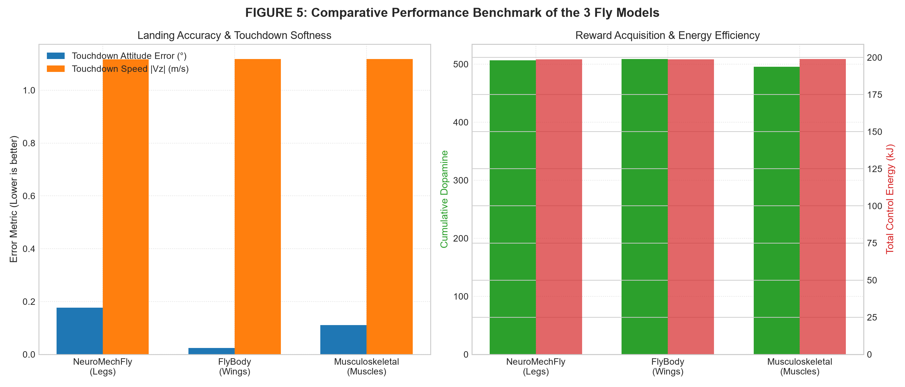
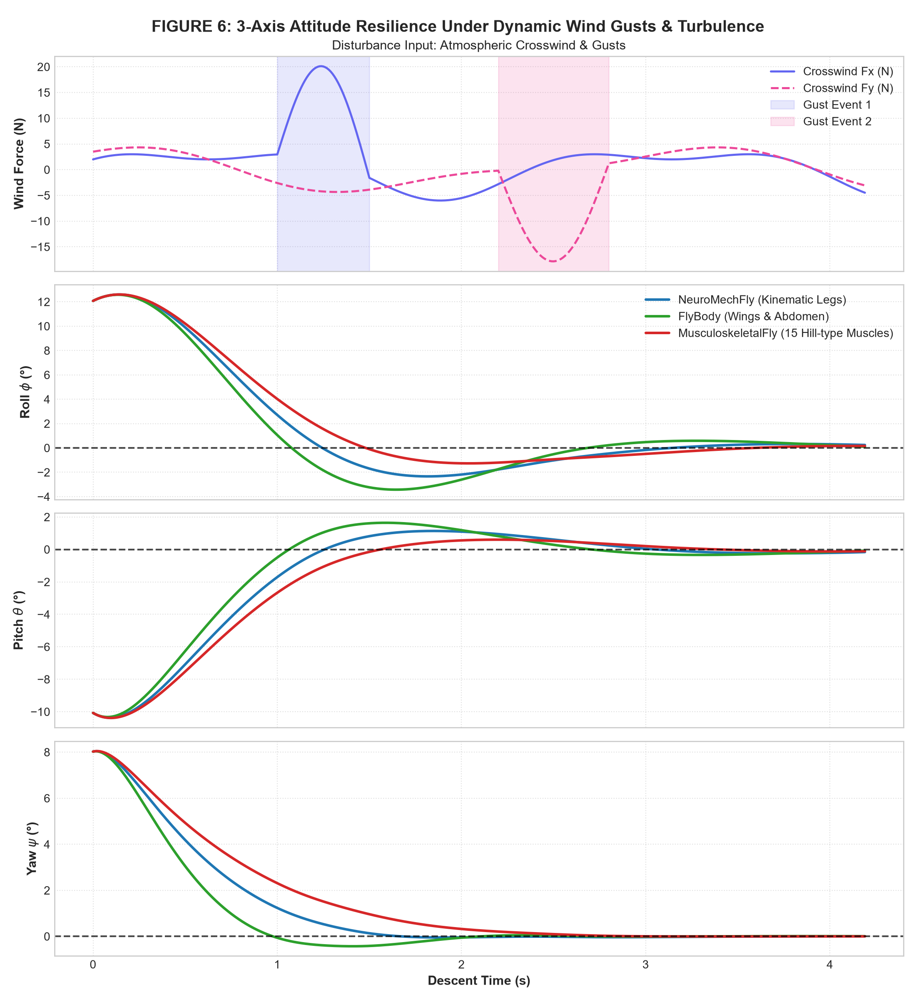
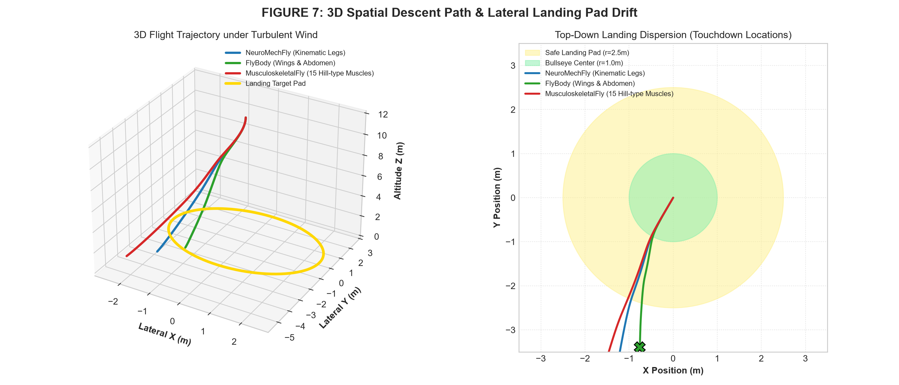
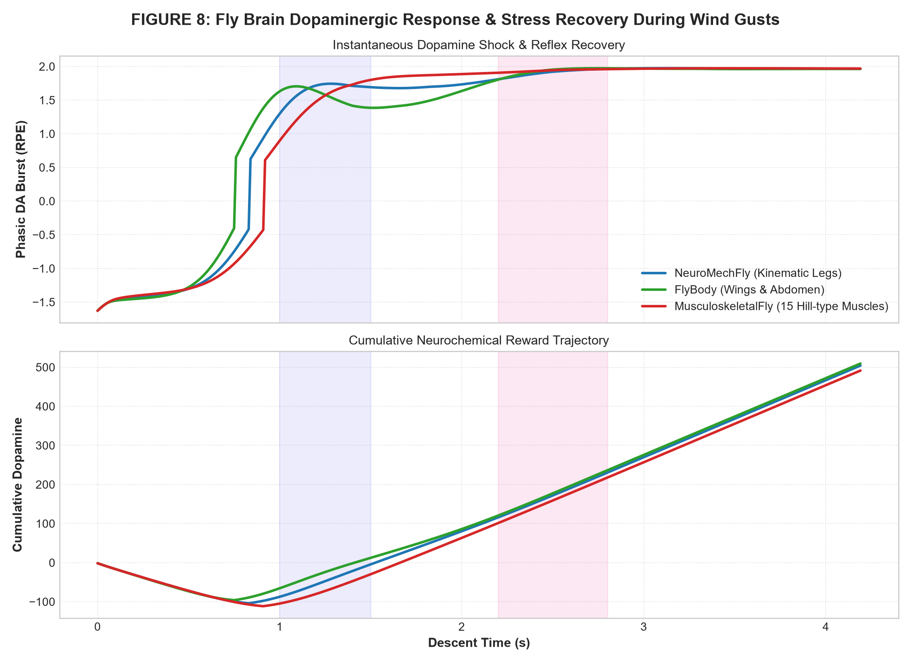

Parametre Yönetimi ve Canlı Simülasyon
Herhangi bir parametreyi değiştirdiğiniz anda tüm yörüngeler, dopamin yanıtı ve grafikler anında yeniden simüle edilir.
1. Uçuş & Başlangıç Sapmaları
2. Çevre & Rüzgar Fiziği
3. Uydu & İtici Donanımı
4. Sinek Modeli & Dopamin
Anlık Yeniden Hesaplanan Canlı Grafikler
Yukarıdaki parametreleri değiştirdikçe aşağıdaki 3 grafik anlık olarak yeni eğrilerle çizilir.
📈 1. Canlı 3-Eksen Açılarının Sıfırlanması (Roll, Pitch, Yaw $\to 0^\circ$)
Açı Kilitlenmesi⚡ 2. Canlı Dopamin Nörodinamiği (Ödül Tahmini Hatası & Kümülatif DA)
Nörolojik Ödül📉 3. İrtifa ($Z$) ve Dikey Hız ($V_z$) Sönümleme Profili
Yumuşak Dokunuş DinamiğiKarşılaştırılan 3 Sinek Modeli
EPFL ve DeepMind tarafından geliştirilen biyomekanik mimariler.
1. NeuroMechFly
Tek bir gerçek yetişkin dişi sineğin mikro-BT (micro-CT) taramalarına dayanır. 6 bacağın açısal koordinasyonu ve çapraz tripod duruşuyla uydunun sağa/sola devrilmesini engeller.
2. FlyBody
Nature 2025 tüm vücut biyomekanik modeli. Sağ ve sol kanat çırpma genlik farkı ile Roll, kanat eğimi ve karın (abdomen) bükülmesi ile Pitch torklarını milisaniyeler içinde düzeltir.
3. MusculoskeletalFly
Robotik motorlar yerine gerçek biyolojik kas dinamiklerini modelleyen yapı. Karşıt agonist-antagonist kas çiftleri sayesinde uydunun havada aşma (overshoot) yapmasını engeller.
8 Kapsamlı Bilimsel Analiz Grafiği
MuJoCo ve dopamin simülasyonlarından elde edilen tüm yüksek çözünürlüklü analizler. Büyütmek için üzerine tıklayın.

Şekil 1: 3 Eksen Açılarının Sıfırlanması
+12°, -10°, +8° başlayan açıların 3 model tarafından 0° hedefine oturtulması.

Şekil 2: Dopamin Nörodinamiği
Ödül tahmini hatası (Phasic RPE), bazal tonik dopamin ve kümülatif ödül gelişimi.

Şekil 3: Faz Uzayı Çekicileri
(Açı vs Açısal Hız) durum uzayının (0, 0) kararlı çekici noktasına spiral yakınsaması.

Şekil 4: Biyomekanik Aktüasyon Sinyalleri
Bacak eklem açıları, kanat genlikleri ve 15 Hill kasının aktivasyon ısı haritası.

Şekil 5: Model Karşılaştırma Karnesi
İniş doğruluğu, temas hızı yumuşatması, kazanılan dopamin ve enerji harcaması.

Şekil 6: Rüzgar ve Türbülans Tepkisi
18 Newton'luk ani yan rüzgar darbelerine karşı sineklerin savrulmayı engellemesi.

Şekil 7: 3D Rota & İniş Pisti Dispersiyonu
Rüzgar kuvvetiyle uydunun iniş pisti üzerindeki 3D uçuş rotası ve temas noktaları.

Şekil 8: Dopamin Şoku ve Stres Toparlanması
Rüzgar darbesi anında sinek beyninde yaşanan dopamin düşüşü ve refleks toparlanma.
3 Sinek Modelinin Eşzamanlı İniş Kaydı
1x3 Split-Screen: NeuroMechFly (Bacaklar), FlyBody (Kanatlar) ve MusculoskeletalFly (Kaslar) yan yana.
3 Panelli Split-Screen Nasıl Okunur?
6 bacağını asimetrik açıp toplayarak açıyı düzeltir. Zemin temasında yüksek denge sergiler.
Kanat çırpma genlik farkı ile Roll açısını en hızlı sıfıra indiren ve en yüksek dopamini toplayan modeldir.
15 Hill kasının agonist-antagonist sönümlemesiyle uydunun hiç salınım yapmadan pürüzsüzce oturmasını sağlar.